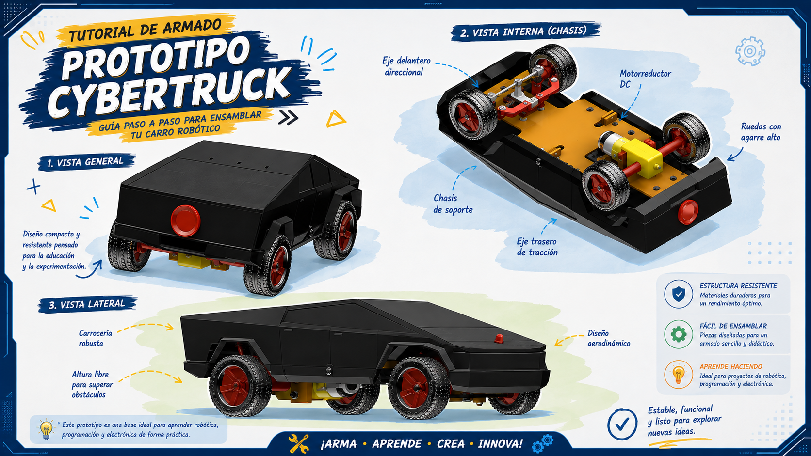

🔩 Lista de componentes
Listado completo de las piezas y componentes necesarios para construir y ensamblar el prototipo robótico Cybertruck.
🖼️ Ver lista de componentesPrototipo robótico educativo controlado mediante ESP32 y Bluetooth, con una aplicación desarrollada en MIT App Inventor.

Demostración del prototipo robótico Cybertruck siendo controlado mediante la aplicación móvil desarrollada en MIT App Inventor.
En este espacio se reúnen los recursos necesarios para conocer, construir, programar y utilizar el prototipo robótico Cybertruck.
Recursos necesarios para conocer los componentes, fabricar las piezas mediante impresión 3D y realizar las conexiones eléctricas del prototipo.
Listado completo de las piezas y componentes necesarios para construir y ensamblar el prototipo robótico Cybertruck.
🖼️ Ver lista de componentesArchivos STL de las piezas diseñadas para fabricar el prototipo mediante impresión 3D, junto con los parámetros recomendados de impresión.
📦 Descargar piezas STL 📋 Parámetros de impresiónDiagrama de las conexiones eléctricas utilizadas en el prototipo Cybertruck y archivo editable realizado en Fritzing.
🔌 Descargar diagrama eléctrico ⬇️ Descargar archivo FritzingRecursos utilizados para programar el ESP32 y desarrollar la aplicación móvil mediante programación por bloques.
Video tutorial sobre Arduino IDE, ESP32, Bluetooth y MIT App Inventor.
▶️ PróximamentePrograma desarrollado en Arduino IDE para recibir los comandos Bluetooth y controlar los motores del prototipo.
🧑💻 Visualizar códigoProyecto desarrollado mediante programación por bloques para crear la aplicación móvil que controla el Cybertruck.
⬇️ Descargar proyecto (.aia)Aprende paso a paso cómo ensamblar el prototipo robótico Cybertruck.
Video tutorial sobre el proceso de ensamblaje del prototipo robótico Cybertruck.
▶️ Ver tutorial en YouTubeMaterial didáctico para aprender sobre el prototipo, su construcción, funcionamiento y uso.
📖 PróximamenteControla el prototipo robótico Cybertruck desde tu celular mediante Bluetooth utilizando la aplicación desarrollada en MIT App Inventor.
📲 Descargar aplicación Android{kind=link}